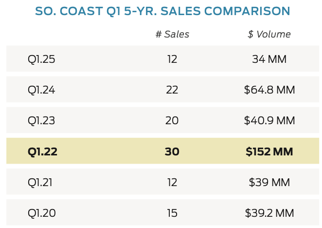
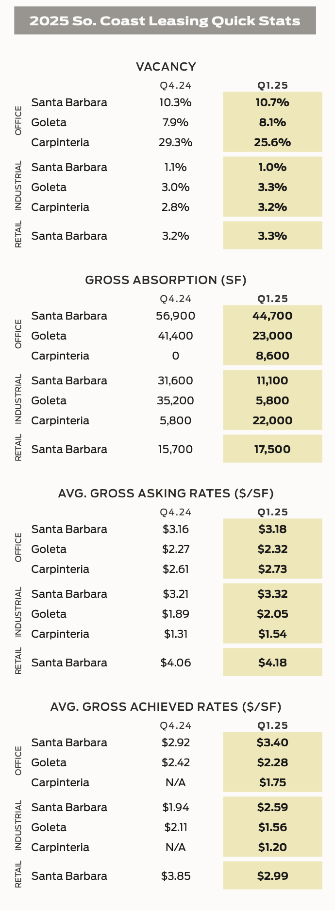
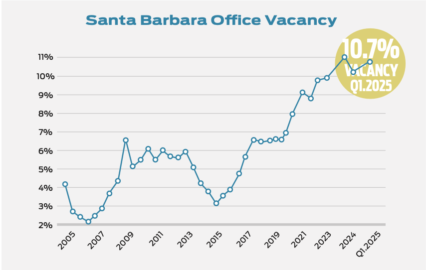

4 Real Estate
4.1 Residential
Key Points:
- The Santa Barbara County Housing Affordability Index fell from 11% to 10% over the past year and sits below the average for all of California and US.
- The median home price for Santa Barbara County $1.41 Million dollars.
- The median time on the market is 23 days at March 2025.
The following interactive applications display the current inventory, average price change, median price, median time on the market, and affordability index for Santa Barbara County, other counties in California, the state of California, and the United States.
Santa Barbara County’s housing market continued its growth in terms of home values compared to last year, albeit at a slower rate. From March 2024 to March 2025, the Zillow County Level Prices, an estimate of the median home value, for Santa Barbara County increased from $958.8104k to $980.636k, a 2.276% change. The median home price in Santa Barbara County as of March 2025 surpassed its pre-recession high of $699k in June 2006. Median prices in both the overall US and California have remained above their pre-recession peaks. None of these geographies experienced gains in year-over-year growth rates of home values relative to this time last year. 2023 also saw a large dip in home value growth beginning in January, reaching a minimum between February and June, depending on the region under consideration. Growth and home values have since rebounded. Following the recovery in home value growth rates, i.e. since 2013, year-over-year growth of Santa Barbara County home values reached a minimum of 1.34% in December 2019. Neighboring San Luis Obispo County has fared worse, reaching a minimum of -0.89% in April 2023. Of particular interest is that, while the United States as a whole also experienced a dip of sorts throughout 2019, the decline and subsequent rebound in year-over-year growth is most dramatic for California. Given the size of California and the relative value of its housing market, the 2019 decline in California’s year-over-year growth may be a large contributing factor to the apparent nationwide dip during that time period.
Inventories, calculated as a index to evaluate how many houes are on the market in a given region, increased in both Santa Barbara County and California, following last year’s rebound. Santa Barbara experienced a decline in inventories from a peak in January 2019 to March 2020. This dip in inventories across the United States, while still present, is much smaller than that in both California and Santa Barbara County housing markets and appears to be a return to the Country’s secular trend in inventories beginning in 2013. Take note of the fact that declining inventories could be due to one or more of many different supply and demand forces, and how efficiently real estate markets match buyers with sellers. The health of local housing markets depends crucially on the source of the change in inventories and not simply the stock of inventories itself.
4.1.1 Affordability
The Housing Affordability Index from the California Association of Realtors measures the percentage of households in California counties that can afford to purchase the median-priced home in their respective areas. Nationally, 36% of United States households could afford the median-priced home in the country during the fourth quarter of 2024, an increase from 35% in the same quarter of the previous year. California’s Housing Affordability Index remains lower than the national average, with 15% of households able to afford the median-priced home in the state during Q4 2024, unchanged from the same quarter in 2023. Santa Barbara County also falls below the national average, with an index of 10%. This represents a decrease from 11% in Q4 2023 and is unchanged from Q3 2024. Moreover, Santa Barbara County is among the least affordable counties in California, tied with Monterey and San Luis Obispo counties at 10%. Only Mono County had a lower affordability index at 6%.
4.1.2 Housing Prices and Sales
Home price data from the California Association of Realtors shows that the real median home price for Santa Barbara County increased by approximately 2.3% between March 2024 and March 2025. This compares to a 3.5% rise in real prices for California and a 3.7% increase for Los Angeles County. When examining different regions within Santa Barbara County, the South Coast experienced a median home price increase of 1.9%, while North County saw a more substantial rise of 3.1% over the same period. These figures suggest a modest appreciation in home values across Santa Barbara County, with North County outpacing the South Coast in terms of growth.
4.1.3 Sales Price vs. List Price
When comparing list prices and sales prices, the median sales price for single family homes is close to the median list price throughout Santa Barbara County. In 2007, no areas in Santa Barbara City and Goleta sold homes at a discount. Instead, SB/East of State, SB/Gol North, SB/Gol South, and SB/West of State sold single family homes at a premium. The differences in list and sale prices may be indicative of the relative bargaining power of buyers and sellers in each region. Throughout the County, the lowest sale to list price was 117% in SB/West of State. List prices vary significantly between regions, with Hope Ranch being the most expensive and SB/Gol South being the least expensive. Median list prices for these two geographies are $3,955,625 and $876,917, respectively.
4.1.4 SB South Coast: Single Family Home Listings, Sales and Prices
Montecito experienced the largest level change in its median sale price, which rose in 2024 from $5,005,005 to $5,500,000. This brings its median home price back in line with historic prices after a stark rise in 2018. This level change also represents the largest percentage change in median home prices, adjusting by 9.89%. Santa Barbara North County had the most stable prices in percentage terms, with median home prices increasing by 2.3% between 2024 and 2025. In terms of mean home prices, Montecito experienced the largest change: average prices rose from $6,433,806 to $6,800,000. Given that the median price saw a modest increase, it is likely the case that a small number of high-value sales is skewing the average for the Montecito area.
4.1.5 Sales Price vs. List Price
When comparing list prices and sales prices, the median sales price for single family homes is close to the median list price throughout Santa Barbara County. In 2007, no areas in Santa Barbara City and Goleta sold homes at a discount. Instead, SB/East of State, SB/Gol North, SB/Gol South, and SB/West of State sold single family homes at a premium. The differences in list and sale prices may be indicative of the relative bargaining power of buyers and sellers in each region. Throughout the County, the lowest sale to list price was 117% in SB/West of State. List prices vary significantly between regions, with Hope Ranch being the most expensive and SB/Gol South being the least expensive. Median list prices for these two geographies are $3,955,625 and $876,917, respectively.
4.1.6 Santa Barbara and Goleta: Condominium Listings, Sales and Prices
The Santa Barbara and Goleta condominium price data from the Santa Barbara Association of Realtors Multiple Listing Services shows that Santa Barbara - East of State Street and Goleta - North of Highway 101, Santa Barbara - West of State Street and Goleta - North of Highway 101 experienced an increase in median condo prices. Moreover, Santa Barbara - East of State Street, Goleta - North of Highway 101 saw an increase in the number of listings. Between both Santa Barbara and Goleta, net listings–listings minus sales–decreased by 48.
4.1.7 Housing Permits
In Santa Barbara County, total residential unit permits decreased from 471 in 2023 to 400 in 2024. Both single-family unit permits and multi-family unit permits decreased from 360 to 92 and from 111 to 15, respectively. Moreover, the share of multi-family permits declined from 23.6% to 3.8%. The total value of residential building permits fell from $105.8 million to $98.2 million.
4.2 Commerical Real Estate
Radius Insight: 2025Q1 South Coast Market Report
Guest Authors: The Radius Team
Radius Commercial Real Estate Investment
- Cooling Q1 sales underscore more selective approach in south coast commercial purchasing
The first quarter of 2025 saw a noticeable slowdown in commercial sales across the South Coast, with only 12 recorded transactions totaling just under $34 million in volume. This marks a significant decline from the $64.75 million in Q1 of 2024 and continues the post-2022 trend of cooling activity after a record-breaking year. While the number of deals and overall dollar volume were down, the quarter still reflected investor interest in select, highquality properties across a mix of asset types. Notably:
The largest sale of the quarter was an office property at 29 W. Calle Laureles. in Santa Barbara, which closed for $4.6 million or $605/SF.
The highest price-per-square-foot for a building went to 730 Anacapa St., a boutique office that sold for $1,372/SF, showing that well-located downtown properties still command a premium despite broader market caution.
Office properties led the quarter in volume, with four (4) sales contributing over $15.7 million combined, including both investor and owner-user purchases.
On the retail side, we saw impressive price-per-square-foot metrics in Goleta, particularly the sale at 5999 Hollister Ave., which sold for over $1,100/SF—a standout number even in today’s market.
Industrial properties traded hands at more modest prices, with activity centered in the Santa Barbara core.
There were a few notable land transactions, including a multifamily development site at 1103 Bailard Ave. in Carpinteria which sold for $4.2 million—an indicator of continuing interest in long-term development plays, albeit at lower price points (around $30/SF for land).
While these numbers represent open-market deals, we also saw two large institutional REIT transactions totaling over $102 million, involving retail centers in Santa Barbara and Carpinteria. However, these were essentially internal REIT acquisitions and not considered part of traditional investor activity, so we’ve excluded them from our totals. Looking at the five-year history, Q1 2025 dropped us down to early pandemic levels in terms of both volume and transaction count, with both 2021 and 2021 recording about $39 million each year with 12 and 15 sales respectively. While buyer demand has clearly cooled since the highs of 2022, we’re seeing a more normalized, steady pace of activity with selective interest in well-located assets. Properties that are unique, turnkey, or income-producing continue to perform well, while others are sitting longer or trading below ask. Interest rate sensitivity and cautious underwriting remain dominant themes, but confidence hasn’t disappeared—it’s just more measured.


4.2.0.1 Office
Not much change in Santa Barbara with the office vacancy rate continuing to hover between 10% and 11%. Interesting to note when you look at achieved office lease rates in Santa Barbara we are near an all-time high at about $3.40/SF gross. Why? Most of what is leasing is smaller, high-end space which tends to rent at a higher price/SF. The largest lease of the quarter involved a non-profit taking 5,500 SF at 602 Anacapa St. Another notable lease involved a veterinary group taking 5,000 SF at 4860 Calle Real. Ever since COVID veterinarian groups have continued to do well. Regrettably, Umbra Labs decided to vacate their nearly 28,000 SF space at 419 State St. and move to Goleta, putting another large tech office space on the market.

Moving on to Goleta, the office vacancy rate ticked up slightly to 8.1%, keeping Goleta the tightest office market in the South Coast (Santa Barbara, Carpinteria and Goleta). Lease rates for higher-end office space in Goleta continue to rise. For the four new leases over 3,000 SF signed during Q1, lease rates ranged from $1.62 - $1.85/SF NNN. As noted in previous reports, the three largest office spaces for lease in Goleta remain subleases of 43,655 SF, 29,372 SF and 22,964 SF. Finally in Carpinteria, the office vacancy rate decreased slightly to 25.6% during Q1, with just one new lease signed. Forgeline Solutions took 8,560 SF on the bluffs. This was formerly occupied by ProCore, who continues to have about 80,000 square feet available for sublease.
4.2.0.2 Industrial
The first quarter 2025 was very quiet for industrial leasing with only 4 new leases signed. The big news was a new 22,000 SF lease at 1120 Mark Ave. in Carpinteria, formerly occupied by Bright Rentals. The space leased to Mesa Energy. Also in Carpinteria, Gigavac put their 40,274 SF at 6382 Rose Ln. on the market for sublease. This moves the vacancy rate in Carpinteria to just over 3%, however that represents only two lease offerings in the Carpinteria submarket. Meanwhile Santa Barbara basically remained flat at about a 1% vacancy rate with only two spaces over 10,000 SF on the market and a total of just under 50,000 SF available. Goleta’s vacancy rate increased slightly to 3.3% with seven spaces over 10,000 SF now on the market for lease. Both Q1 2025 and Q4 2024 were quiet with regard to larger industrial space leasing activity. Lease rates throughout the South Coast are stable, however larger industrial tenants will have more leverage in light of the increased options on the market.
4.2.0.3 Retail
Retail leasing activity in Santa Barbara continued to soften in the first quarter of 2025. While the 12 new retail leases signed in Q1 surpassed the eight (8) recorded in Q4 2024, total absorption remained modest, with just 17,512 SF removed from the market. The trend of stronger demand for smaller retail spaces persisted, while larger spaces remained increasingly difficult to lease. The largest lease of the quarter was a 3,081 SF space at 1230 State St., secured by Pascucci’s—a downtown fixture for 31 years. The restaurant will relocate from the 500 block, and while the lease is not notable for its size, the continued presence of long-standing operators on State Street is an encouraging sign for the city. Two additional leases were completed on the 900 block of State Street, at 909 and 911.5 State, contributing to revitalization efforts on a block that has struggled with persistent vacancies. Meanwhile, 805 University relocated from 920 State St. to Paseo Nuevo, exemplifying how short-term leases can serve as interim solutions while long-term plans for this key downtown development take place. Larger retail vacancies, however, remain a challenge. The former Nordstrom building at 817 State St. is now marketing its entire 33,053 SF first floor as available retail space, further increasing the inventory of large- format retail downtown. Outside of downtown, Hook Line and Sinker—a local staple in the fishing community since 1976—signed a five-year lease at Las Positas Center. Montecito also saw two new leases, including Marisa Mason at The Post (1805 E. Cabrillo Blvd.) who currently operates at Arlington Plaza on the 1300 block of State. Overall, Santa Barbara’s retail vacancy rate inched up from 3.2% in Q4 2024 to 3.3% in Q1 2025. While the increase was slight, it marks a noticeable rise from the 2.0% vacancy rate reported in Q2 2023. Asking rents rose slightly from $4.06/SF to $4.18/SF (gross equivalent), while achieved rents dropped from $3.85/SF to $2.99/SF—excluding higher-priced Montecito leases. This decline in achieved rents was driven by a handful of deals at below-market rates. The continuation of small businesses accounting for the vast majority of Q1 leases highlights the vital role locally owned operators play in Santa Barbara’s retail landscape. While national tenants do maintain a presence, the data clearly reflects that small businesses are the primary engine driving the local retail economy.
4.2.0.4 West Ventura County / Conejo Valley Office
The West Ventura County and Conejo Valley office vacancy rate continued to rise in Q1 2025, increasing to 25.9% and bringing total available space to over 3.55MM SF. Despite a modest uptick in activity with approximately 150,000 SF in new leases signed, the market remains sluggish and well below historical leasing averages.
The three largest contiguous availabilities remain: - 225 E. Hillcrest Dr., Thousand Oaks – 121K RSF - 112 S. Lakeview Canyon Rd., Westlake Village – 133K RSF - 5601 Lindero Canyon Rd., Westlake Village – 99K RSF
4.2.0.5 W. Ventura County Retail
West Ventura County’s retail market in Q1 2025 maintained steady momentum with 53 new leases signed compared to 56 in Q4 2024. High demand persisted for second-generation restaurant spaces, pad sites and junior box positions, though vacancy rates rose to 7.0% with over 200,000 SF of new space flooding the market from closures like $.99 only, Big Lots, Party City and Forever 21. The vacancy rate would be even higher without merchants like Five Below and Dollar Tree signing on to occupy some of the Party City and $.99 only boxes.
Meanwhile, the average monthly asking lease rate held steady at $2.43/SF with 1.5% annual growth. The largest new lease of the quarter was Tractor Supply Company’s 46,817 SF at 2975 Johnson Dr. in Ventura. Two other notable leases include Action Academy children’s gymnastics club taking on 7,306 SF in Moorpark; and Asian Fusion Cuisine signing on for 6,700 SF in Thousand Oaks, a sizable footprint particularly amid the current market where restaurant spaces typically range from 1,500 SF – 2,500 SF.
Moving on to sales activity in the retail sector, the first quarter saw a blend of small cash deals with major portfolio transactions, underscoring Ventura County’s resilient and attractive retail investment landscape. One key sales transaction was the $11.9 million sale of Channel Islands Marketplace (1731–1741 Ventura Blvd., Oxnard) at $371.29/SF with a 6.45% Cap rate. This shopping center includes tenants like Guitar Center and Mattress Firm. Ownership recently tore down an existing 6,000 SF building and ground-leased the land to Starbucks which helped lower the overall Cap rate. Additionally, Blackstone Inc.’s $4 billion acquisition of ROIC (Retail Opportunity Investments Corp.) in February added grocery- anchored centers like Seabridge Marketplace in Oxnard, Park Oaks in Thousand Oaks, North Ranch in Westlake, and Moorpark Town Center to its portfolio, further reinforcing investor confidence in Ventura County’s stable retail landscape.
4.2.0.6 Santa Barbara South County | 5+ Units
The first quarter of 2025 showed a significant shift in market dynamics for multifamily properties in Santa Barbara South County. While demand remained relatively strong, we saw a notable decrease in transaction volume compared to the robust activity of Q4 2024, with only five (5) transactions recorded in Q1 for properties with 5+ units (including Isla Vista), compared to 2024’s average of 8.5 per quarter. One of the two standout transactions for the quarter was at 20-80 Oceano Ave. in Santa Barbara, a 29-unit oceanfront property on the Mesa adjacent to Santa Barbara City College, that sold for $21,150,000 ($729,310/Unit) at a 4.68% CAP rate. This property featured a mix of unit types, with most apartments enjoying full oceanfront views, including 9 existing short-term rentals. The seller provided financing on this transaction, helping to facilitate the deal despite challenging market conditions. The second standout transaction was 27 E. Gutierrez St., a mixed-use property acquired by UC Santa Barbara as part of the university’s strategic expansion into downtown Santa Barbara. This property, located at the intersection of State and Gutierrez streets, represents a significant institutional investment aimed at strengthening UCSB’s presence in the community and supporting State Street’s revitalization efforts. The purchase, approved by the UC Board of Regents in November 2024, closed in January 2025 at an undisclosed price. Another transaction in South County was at 1605 Bath St., Santa Barbara, a 10-unit property that sold for $2,400,000 ($240,000/Unit) at a 5.88% CAP rate. What’s particularly noteworthy is that it traded well below its asking price of $3,150,000, representing a 24% discount. This significant price adjustment indicates a growing emphasis among buyers on in-place income and physical condition over speculative upside. The reduced transaction volume likely reflects a combination of factors, including the implementation of stricter rent control measures in the City of Santa Barbara, ongoing concerns about interest rates, and a consistent bid-ask spread between seller expectations and buyer capacity.
4.2.0.7 Isla Vista
Isla Vista saw two transactions in Q1 2025, reflecting continued investor interest in the student housing market near UCSB. At 850 Camino Pescadero, a 12-unit property traded off-market for $6,775,000 ($564,583/Unit) at a 6.10% CAP rate. Notably, this property previously sold in 2022 for $3,925,000, and the significant price appreciation is attributed to extensive renovations and the addition of an ADU, bringing the property to a premium market standard. The second transaction was at 6575 Segovia Rd., a 12-unit property that sold for $3,700,000 ($308,333/ Unit) at a 4.57% CAP rate. This property traded 7% below its asking price of $3,975,000. It required immediate capital improvements, particularly to the roof, but its strategic location within Isla Vista and resulting acquisition price made it a compelling investment opportunity. Isla Vista continues to benefit from its unique positioning as a student housing market, where tenant turnover allows for more frequent rent adjustments compared to other Central Coast submarkets.
4.2.0.8 Santa Barbara North County | 5+ Units
Santa Barbara North County showed strength in Q1 2025, with three transactions completed, highlighting increased demand for multifamily properties in Lompoc. The largest transaction was at 411-415 N. H St., a 29-unit property that sold for $4,875,000 ($168,103/Unit) at a 4.85% CAP rate. The property traded off-market, underscoring heightened demand for Lompoc multifamily assets. The context of this sale suggests that growth in the area may be partly fueled by nearby Vandenberg Village and the SpaceX facility, bolstering the region with strong economic drivers. Two additional transactions in Lompoc were part of a two-property sale: 732 N. G St., a 7-unit property that sold for $1,455,000 ($207,857/Unit) at a 5.00% CAP rate, and 736 N. G St., a 6-unit property that sold for $800,000 ($133,333/Unit) at a 5.95% CAP rate. The combined per-unit price of approximately $173,000 is yet another example of a “low-end” price point for multifamily product in Lompoc. The activity in North County, particularly in Lompoc, represents a notable shift in investor sentiment. CAP rates remain more attractive than those typically seen in South County properties, providing stronger cash flow for investors concerned about rising operating costs and interest rates.
4.2.0.9 Ventura County | 5+ Units
Ventura County saw three transactions in Q1 2025. The most significant was at 850 Warwick Ave. in Thousand Oaks, a 50-unit property that sold for $18,200,000 ($364,000/Unit) at a 4.50% CAP rate. The property previously traded in 2021 for $16.1MM, representing a modest appreciation of approximately 13% over four years. In the City of Ventura, 473–477 W. Ramona St., a 15-unit property, sold for $2,600,000 ($173,333/Unit) at a 4.00% CAP rate. This property was purchased by the City of Ventura for potential affordable housing development, with strong ADU potential given its sizable 33,105 SF lot. The third transaction was at 47–53 W Prospect St., a 7-unit property that sold for $1,625,000 ($232,143/Unit) at a 4.54% CAP rate.
4.2.0.10 San Luis Obispo County | 5+ Units
SLO County recorded two transactions in Q1 2025. In Oceano, a 20-unit property at 1470 S. 13th St. sold for $3,710,000 ($185,500/ Unit) at a 5.35% CAP rate. The property comprised a main house and three duplexes situated on a 3.5-acre lot. The second transaction was in Atascadero at 17255 Walnut Ave., a 7-unit property that sold for $1,675,000 ($239,286/Unit), selling to a cash buyer at 16% below asking price. Both transactions in SLO County closed below their asking prices, reflecting the market’s adjustment to current economic conditions. The focus on less central areas indicates that investors are seeking emerging value opportunities outside traditionally strong markets.
4.2.0.11 Multifamily Summary | 5+ Units
The first quarter of 2025 presented a mixed picture for the Central Coast 5+ unit multifamily market. With a total of 12 transactions across all submarkets, activity was moderate compared to the robust fourth quarter of 2024. Several key themes emerged: Most properties traded below asking prices, with discounts ranging from 2% to 24%, further signaling the ongoing market correction as sellers adjust to new economic realities. CAP rates have continued their upward trajectory, with most transactions in the 4.5% to 6.0% range—a significant shift from the sub-4% CAP rates common just three years ago. North County, particularly Lompoc, demonstrated unexpected resilience with three transactions, while traditionally strong markets like South County saw reduced activity. Buyers across all submarkets continue to emphasize current performance over speculative upside, with turn-key assets commanding premium pricing. Larger institutional investors remain active in the market, as evidenced by the 50-unit Thousand Oaks transaction and the 29-unit oceanfront property in Santa Barbara. The student housing market near UCSB continues to perform well, with two significant transactions demonstrating the appeal of consistently occupied properties with regular tenant turnover. Looking ahead to the remainder of 2025, we anticipate transaction activity will gradually increase as more sellers align their pricing expectations with current market conditions. The recent Federal Reserve signals about potential rate cuts later in 2025 may provide some relief, though timing remains uncertain. The fundamentals of the Central Coast multifamily market remain strong, with vacancy rates holding steady at historically low levels of 2-3% in South County and 3-4% in North County and SLO County. Rental rate growth has moderated to around 2-3% annually, down from the peaks seen in 2021–2022 but still outperforming national averages. For investors, the emphasis on current performance and conservative underwriting is likely to continue throughout 2025. Turn- key properties are experiencing softer demand and are trading at higher CAP rates in the current market environment. Properties offering stable income, limited deferred maintenance, and potential for modest rent growth will continue to attract the most buyer interest, though buyers remain disciplined in valuations relative to previous market cycles.
4.2.0.12 Santa Barbara | 2–4 Units
The first quarter of 2025 recorded 8 closed transactions in the 2–4 unit multifamily residential segment within the City of Santa Barbara — a notable slowdown compared to the strong finish that saw 30 sales in Q4 of 2024. While the drop in sales activity suggests a more measured start to the year, market fundamentals indicate continued interest from both investors and owner-users. Despite fewer closings, 7 new listings hit the market in Q1, showing that property owners are still testing the waters. Three of these newly listed properties went into escrow and successfully closed before the quarter ended — signaling that buyers are actively monitoring the market and are ready to move on well-positioned deals. At the close of Q1, there were 10 active listings available, providing a solid pipeline of opportunities heading into Q2. With an average Days on Market (DOM) of 50.25, we’re seeing a pace that aligns with a more balanced, healthy market. It’s also worth noting that the uncertain future surrounding rent caps and so-called “renoviction” policies currently under discussion by the Santa Barbara City Council may be influencing seller behavior. The potential for increased restrictions and new limitations on landlords has likely become a motivating factor for some mom-and-pop or long-time family-owned operators to exit the market ahead of additional regulation. This policy uncertainty adds another layer of complexity to investment decision-making.
Transaction Breakdown:
- 5 Duplexes
- 2 Triplexes
- 1 Fourplex
Among the 8 sales, 3 properties sold after at least one price reduction, underscoring the importance of strategic pricing in today’s environment.
Notable Sales:
- 424–426 E. Valerio St.
This Upper East duplex set the benchmark for highest price per unit in Q1. Originally listed at $3,495,000, the property sold in February after a price adjustment to $3,150,000 — equating to $1,575,000 per unit. The property featured a beautifully maintained 4-bed, 3.5-bath craftsman main residence with a large backyard, plus a detached 1-bed, 1-bath unit with a private patio. Future ADU potential made this an especially attractive offering for value-add buyers in a premium location.
- 410/411 W. Cota St. & Dibblee St.
A standout from an investment perspective, this combined triplex and duplex package (5 units total) was marketed as a small portfolio. Initially listed at $2,500,000 ($500,000/unit), the property sold at $2,350,000 ($470,000/unit), making it one of the lowest price-per-unit sales of the quarter. Delivered vacant, the opportunity presented flexibility for a full remodel or possible redevelopment into higher- density housing.
4.2.0.13 Multifamily Summary | 2–4 Units
Properties with tenant complexities, deferred maintenance, or less attractive GRMs are sitting on the market longer. However, there remains a pool of active, motivated investors — in the $1,000,000 to $3,000,000 range. Well-located properties with clean unit mixes and realistic asking prices are continuing to transact, often without significant concessions. This segment continues to draw hybrid interest, with a mix of pure investors and owner-occupiers. That blend creates a unique dynamic for duplexes, triplexes and fourplexes in desirable neighborhoods, where some buyers are willing to accept lower immediate returns in exchange for long-term appreciation and lifestyle benefits. Heading into Q2, Santa Barbara’s 2–4 unit market appears stable but price-sensitive. Inventory is modest, demand is still present, and underwriting remains disciplined. Expect more traction from listings priced appropriately with upside potential — especially as buyers adjust expectations and sellers become more strategic.